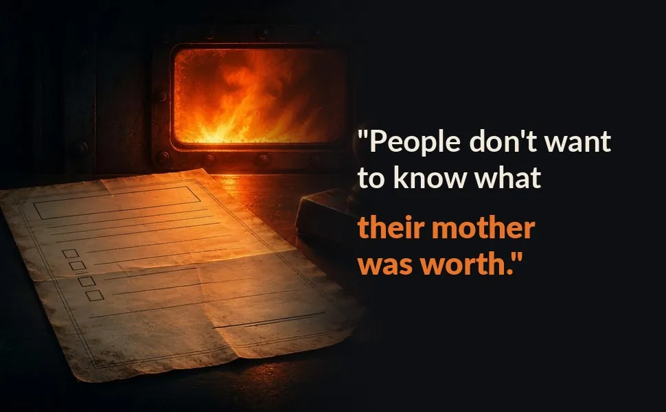
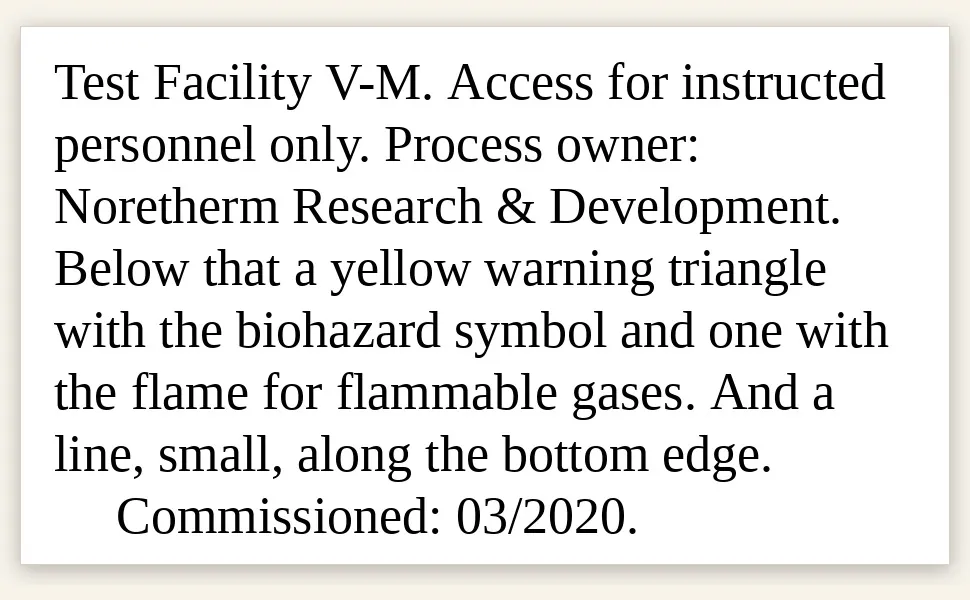

RENDERED – Consent Confirmed
The Kallhoven Files · Book 1
A social thriller about dignity, greed, and who owns a person after they die.
Opens amazon.com in a new tab.
This book is also available in: Deutsch

Who does a person belong to after death?
Kallhoven, a German county seat of sixty thousand. A state law allows voluntary energy donation after death, and Noretherm AG runs the plant. The man behind the idea is Hannes Haverkott. The night after his mother's funeral, alone in the control room, he posts a question in a local online forum. Soon his face is on the posters. Then his sister Rike finds an old form in their mother's binders.

A look inside
Look inside: the closed-off hall
His boss told him to skip one hall on his round. He goes anyway. The image shows what he finally reads. This is how he gets there: He walked around the hall. The personnel door was locked; nothing unusual about that either. Around the back stood a container, an office container like the ones on construction sites, with a barred window. Next to it a pipe ran into the hall that wasn't on the plan Hannes knew. A gas line, painted yellow, with a gate valve that had a padlock on it. He followed it with his eyes. It ran over a small pipe bridge to the common header that went to the flare and the combined heat and power plant. The same common header the sewage sludge digester was connected to. And, as he knew from the plans, Line M. A gas line out of a hall that was supposedly just standing empty. Next to the personnel door, half hidden behind a trash can, hung a second sign. An old one, faded, made of sheet metal. Hannes had to kneel to read all of it. He pushed the trash can aside.
One of 27 full-page sketches: the talk show studio
The paperback and hardcover include 27 scene drawings in black and white, plus three that open the three acts. Here, the set of Klartext am Rhein: eight armchairs in a semicircle, a live broadcast, and Hannes among the guests.
A work of fiction. Any resemblance to real people or companies is coincidental.
Opens amazon.com in a new tab.